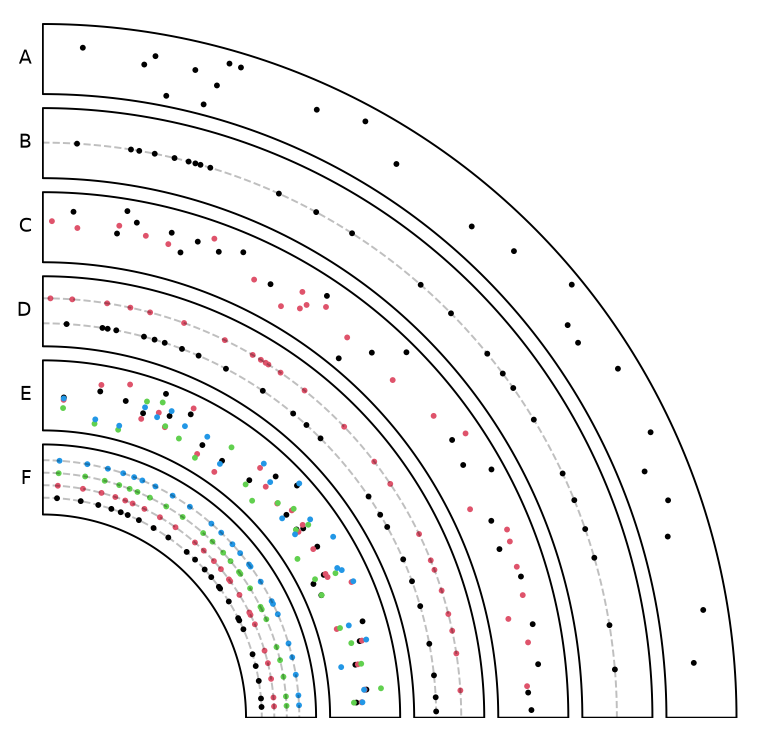
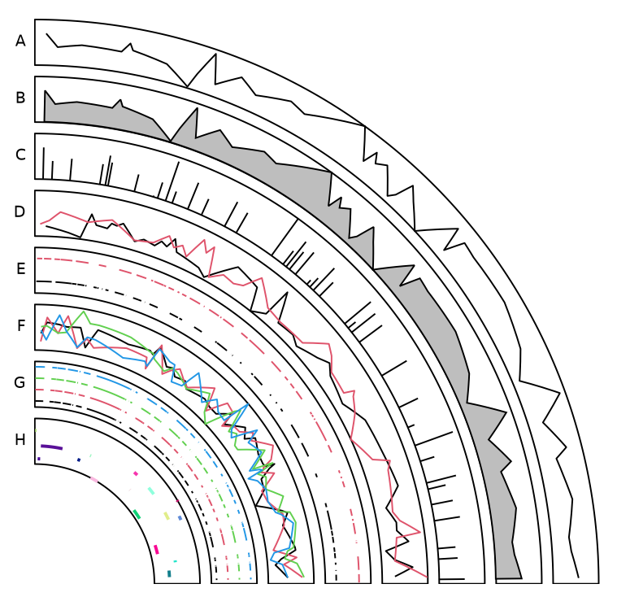
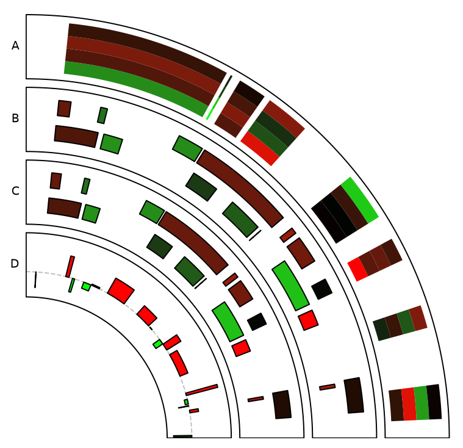

11 Modes for
circos.genomicTrack()#
The behavior of circos.genomicTrack() and
panel_fun adapts depending on the structure of the input
data (a single pandas.DataFrame or a list of
pandas.DataFrames, and how many numeric columns are
present) as well as the stack mode setting.
11.1 Normal mode#
11.1.1 Input is a DataFrame#
When data is a single BED-like
pandas.DataFrame, circos.genomicTrack() passes
two DataFrames to
panel_fun(region, value, **kwargs) for the current
chromosome: region holds (start, end), and
value holds all columns from the fourth column onward. Any
numeric_column setting specified in
circos.genomicTrack() is forwarded through
**kwargs so downstream functions such as
circos.genomicPoints(region, value, **kwargs) use the
selected columns automatically.
When multiple numeric columns are present (or selected), graphics are added iteratively for every selected column against the same genomic regions.
from circlize_py import circos, generateRandomBed
data = generateRandomBed(nc=2, seed=1)
def panel_normal(region, value, **kwargs):
# Uses numeric_column=3 passed from circos.genomicTrack() -> value column 0
circos.genomicPoints(region, value, **kwargs)
# Without **kwargs, all numeric columns in `value` are plotted
circos.genomicPoints(region, value)
# Explicit 0-based column index inside `value` (corresponding to col index 3 in `data`)
circos.genomicPoints(region, value, numeric_column=0)
circos.genomicTrack(data, numeric_column=3, panel_fun=panel_normal)11.1.2 Input is a list of DataFrames#
When data is a list[pandas.DataFrame],
panel_fun is invoked once per DataFrame inside
each cell. In each call, region and value
correspond to the current DataFrame and current chromosome,
and getI(**kwargs) returns the 1-based index
(1, 2, ...) of the active DataFrame. Note that
getI(**kwargs) is only meaningful inside
panel_fun and requires **kwargs to be accepted
by panel_fun.
When numeric_column is passed to
circos.genomicTrack() with a list of
DataFrames, it may have length 1 (applied to all
DataFrames) or match the number of DataFrames
(one column per DataFrame). When omitted, the first numeric
column of each DataFrame is used.
from circlize_py import circos, generateRandomBed, getI
bed_list = [generateRandomBed(seed=1), generateRandomBed(seed=2)]
def panel_list(region, value, **kwargs):
i = getI(**kwargs)
circos.genomicPoints(region, value, col=i, **kwargs)
circos.genomicTrack(bed_list, panel_fun=panel_list)
# Select column index 3 ('value1') from the first BED and index 4 ('value2') from the second
bed_list2 = [generateRandomBed(nc=2, seed=1), generateRandomBed(nc=2, seed=2)]
circos.genomicTrack(bed_list2, numeric_column=[3, 4], panel_fun=panel_list)11.2 Stack mode#
circos.genomicTrack() supports stack=True,
which overrides the y-axis into evenly spaced horizontal bins
(y = 1, 2, ...) so multiple columns or multiple
DataFrames can be stacked cleanly inside one track.
11.2.1 Input is a DataFrame#
Under stack=True with a single DataFrame,
each numeric column selected by numeric_column (or all
numeric columns by default) becomes one horizontal layer.
ylim is set internally to [0.5, n + 0.5],
where n is the number of selected numeric columns, and
panel_fun runs once per column at y = i. In
each call, value contains only the current numeric column
plus any non-numeric columns, while getI(**kwargs) returns
the 1-based layer index i. Low-level genomic functions
automatically map y-coordinates to y = i (rather than
reading numeric values from value), though
value remains available for mapping colors or
annotations.
data = generateRandomBed(nc=2, seed=1)
def panel_stack_df(region, value, **kwargs):
i = getI(**kwargs)
circos.genomicPoints(region, value, col=i, **kwargs)
circos.genomicTrack(data, stack=True, panel_fun=panel_stack_df)11.2.2 Input is a list of DataFrames#
Under stack=True with a
list[pandas.DataFrame], each DataFrame becomes
one horizontal layer (ylim = [0.5, len(bed_list) + 0.5]),
and panel_fun is called iteratively for each
DataFrame at y = i. Unlike a multi-column
single DataFrame, each DataFrame in a list can
carry completely different genomic intervals.
bed_list = [generateRandomBed(seed=1), generateRandomBed(seed=2)]
def panel_stack_list(region, value, **kwargs):
i = getI(**kwargs)
circos.genomicPoints(region, value, col=i, **kwargs)
circos.genomicTrack(bed_list, stack=True, panel_fun=panel_stack_list)11.3 Applications#
The following examples compare normal mode and
stack=True mode for points, lines, and rectangles. To zoom
in on individual tracks clearly, only chromosome 1 is plotted in the
top-right quarter of the canvas (canvas_xlim=(0, 1),
canvas_ylim=(0, 1), start_degree=90,
gap_degree=270).
11.3.1 Points#
import matplotlib.pyplot as plt
import numpy as np
from circlize_py import CELL_META, circos, generateRandomBed, get, getI
fig = plt.figure(figsize=(6.5, 6.5))
ax = fig.add_subplot(111)
circos.par(
track_height=0.1,
start_degree=90,
canvas_xlim=(0.0, 1.0),
canvas_ylim=(0.0, 1.0),
gap_degree=270,
)
circos.initializeWithIdeogram(chromosome_index="chr1", plot_type=None, ax=ax)Track A plots a single numeric column in normal mode, while Track B
plots the same data under stack=True along a horizontal
line (y = 1):
bed = generateRandomBed(nr=300, seed=999)
circos.genomicTrack(
bed,
panel_fun=lambda region, value, **kwargs: circos.genomicPoints(
region, value, pch=16, cex=0.5, **kwargs
),
)
pos = get.cell.meta.data("yplot")
ax.text(-0.015, float(np.mean(pos)), "A", ha="right", va="center", clip_on=False)
def panel_b(region, value, **kwargs):
circos.genomicPoints(region, value, pch=16, cex=0.5, **kwargs)
i = getI(**kwargs)
circos.lines(CELL_META.cell_xlim, [i, i], lty=2, col="#00000040")
circos.genomicTrack(bed, stack=True, panel_fun=panel_b)
pos = get.cell.meta.data("yplot")
ax.text(-0.015, float(np.mean(pos)), "B", ha="right", va="center", clip_on=False)Tracks C and D repeat this comparison with a list of two BED
DataFrames, using i = getI(**kwargs) to color
each dataset (col=i maps via the R palette):
bed1 = generateRandomBed(nr=300, seed=1001)
bed2 = generateRandomBed(nr=300, seed=1002)
bed_list = [bed1, bed2]
circos.genomicTrack(
bed_list,
panel_fun=lambda region, value, **kwargs: circos.genomicPoints(
region, value, pch=16, cex=0.5, col=getI(**kwargs), **kwargs
),
)
pos = get.cell.meta.data("yplot")
ax.text(-0.015, float(np.mean(pos)), "C", ha="right", va="center", clip_on=False)
def panel_d(region, value, **kwargs):
i = getI(**kwargs)
circos.genomicPoints(region, value, pch=16, cex=0.5, col=i, **kwargs)
circos.lines(CELL_META.cell_xlim, [i, i], lty=2, col="#00000040")
circos.genomicTrack(bed_list, stack=True, panel_fun=panel_d)
pos = get.cell.meta.data("yplot")
ax.text(-0.015, float(np.mean(pos)), "D", ha="right", va="center", clip_on=False)Tracks E and F plot a DataFrame containing four numeric
columns in normal mode (col=[1, 2, 3, 4]) and in
stack=True mode (four stacked horizontal lines, Figure
11.1):
bed4 = generateRandomBed(nr=300, nc=4, seed=1003)
circos.genomicTrack(
bed4,
panel_fun=lambda region, value, **kwargs: circos.genomicPoints(
region, value, pch=16, cex=0.5, col=[1, 2, 3, 4], **kwargs
),
)
pos = get.cell.meta.data("yplot")
ax.text(-0.015, float(np.mean(pos)), "E", ha="right", va="center", clip_on=False)
def panel_f(region, value, **kwargs):
i = getI(**kwargs)
circos.genomicPoints(region, value, pch=16, cex=0.5, col=i, **kwargs)
circos.lines(CELL_META.cell_xlim, [i, i], lty=2, col="#00000040")
circos.genomicTrack(bed4, stack=True, panel_fun=panel_f)
pos = get.cell.meta.data("yplot")
ax.text(-0.015, float(np.mean(pos)), "F", ha="right", va="center", clip_on=False)
circos.clear()
11.3.2 Lines#
The next figure demonstrates circos.genomicLines()
across eight tracks (Figure 11.2):
fig = plt.figure(figsize=(6.5, 6.5))
ax = fig.add_subplot(111)
circos.par(
track_height=0.08,
start_degree=90,
canvas_xlim=(0.0, 1.0),
canvas_ylim=(0.0, 1.0),
gap_degree=270,
cell_padding=(0.0, 0.0, 0.0, 0.0),
)
circos.initializeWithIdeogram(chromosome_index="chr1", plot_type=None, ax=ax)- Track A: plain lines connecting region midpoints.
- Track B: filled area under the curve
(
area=True). - Track C: vertical bars
(
type="h").
bed = generateRandomBed(nr=500, seed=2001)
circos.genomicTrack(
bed,
panel_fun=lambda region, value, **kwargs: circos.genomicLines(region, value, **kwargs),
)
circos.genomicTrack(
bed,
panel_fun=lambda region, value, **kwargs: circos.genomicLines(region, value, area=True, **kwargs),
)
circos.genomicTrack(
bed,
panel_fun=lambda region, value, **kwargs: circos.genomicLines(region, value, type="h", **kwargs),
)- Track D: list of two BED
DataFrames in normal mode. - Track E: list of two BED
DataFrames instack=Truemode (under stack mode,circos.genomicLines()draws horizontal segments spanning each region’s[start, end]).
bed1 = generateRandomBed(nr=500, seed=2002)
bed2 = generateRandomBed(nr=500, seed=2003)
bed_list = [bed1, bed2]
circos.genomicTrack(
bed_list,
panel_fun=lambda region, value, **kwargs: circos.genomicLines(
region, value, col=getI(**kwargs), **kwargs
),
)
circos.genomicTrack(
bed_list,
stack=True,
panel_fun=lambda region, value, **kwargs: circos.genomicLines(
region, value, col=getI(**kwargs), **kwargs
),
)- Track F: single
DataFramewith 4 numeric columns in normal mode. - Track G: single
DataFramewith 4 numeric columns instack=Truemode. - Track H: horizontal segments placed at each
region’s numeric y-value (
type="segment"), colored per region withrand_color().
bed4 = generateRandomBed(nr=500, nc=4, seed=2004)
circos.genomicTrack(
bed4,
panel_fun=lambda region, value, **kwargs: circos.genomicLines(
region, value, col=[1, 2, 3, 4], **kwargs
),
)
circos.genomicTrack(
bed4,
stack=True,
panel_fun=lambda region, value, **kwargs: circos.genomicLines(
region, value, col=getI(**kwargs), **kwargs
),
)
bed_h = generateRandomBed(nr=200, seed=2005)
def panel_h(region, value, **kwargs):
cols = rand_color(len(region), seed=2006)
for k in range(len(region)):
circos.genomicLines(
region.iloc[[k]],
value.iloc[[k]],
type="segment",
lwd=2,
col=cols[k],
**kwargs,
)
circos.genomicTrack(bed_h, panel_fun=panel_h)
circos.clear()
11.3.3 Rectangles#
For rectangles, fill color commonly encodes numeric values via a
continuous color mapping created by colorRamp2() (Figure
11.3):
from circlize_py import colorRamp2
fig = plt.figure(figsize=(6.5, 6.5))
ax = fig.add_subplot(111)
circos.par(
track_height=0.15,
start_degree=90,
canvas_xlim=(0.0, 1.0),
canvas_ylim=(0.0, 1.0),
gap_degree=270,
)
circos.initializeWithIdeogram(chromosome_index="chr1", plot_type=None, ax=ax)
col_fun = colorRamp2(breaks=[-1.0, 0.0, 1.0], colors=["green", "black", "red"])- Track A: four numeric columns under
stack=Truemode form a 4-row circular heatmap sharing the same genomic intervals. - Track B: a list of two
DataFrames understack=Truemode, with explicitytop=i + 0.3andybottom=i - 0.3leaving vertical margins. - Track C: identical layout to Track B implemented
manually in normal mode by setting
ylim=(0.5, 2.5). - Track D: genomic barplots drawn with
ytop_column=0andybottom=0.0, colored"red"for positive values and"green"for negative values.
bed4 = generateRandomBed(nr=100, nc=4, seed=3001)
circos.genomicTrack(
bed4,
stack=True,
panel_fun=lambda region, value, **kwargs: circos.genomicRect(
region, value, col=col_fun(value.iloc[:, 0]), border=None, **kwargs
),
)
bed1 = generateRandomBed(nr=100, seed=3002)
bed2 = generateRandomBed(nr=100, seed=3003)
bed_list = [bed1, bed2]
def panel_rect_list(region, value, **kwargs):
i = getI(**kwargs)
circos.genomicRect(
region,
value,
ytop=i + 0.3,
ybottom=i - 0.3,
col=col_fun(value.iloc[:, 0]),
**kwargs,
)
circos.genomicTrack(bed_list, stack=True, panel_fun=panel_rect_list)
circos.genomicTrack(bed_list, ylim=(0.5, 2.5), panel_fun=panel_rect_list)
bed_d = generateRandomBed(nr=200, seed=3004)
def panel_rect_d(region, value, **kwargs):
cols = np.where(value.iloc[:, 0] > 0, "red", "green").tolist()
circos.genomicRect(region, value, ytop_column=0, ybottom=0.0, col=cols, **kwargs)
circos.lines(CELL_META.cell_xlim, [0.0, 0.0], lty=2, col="#00000040")
circos.genomicTrack(bed_d, panel_fun=panel_rect_d)
circos.clear()